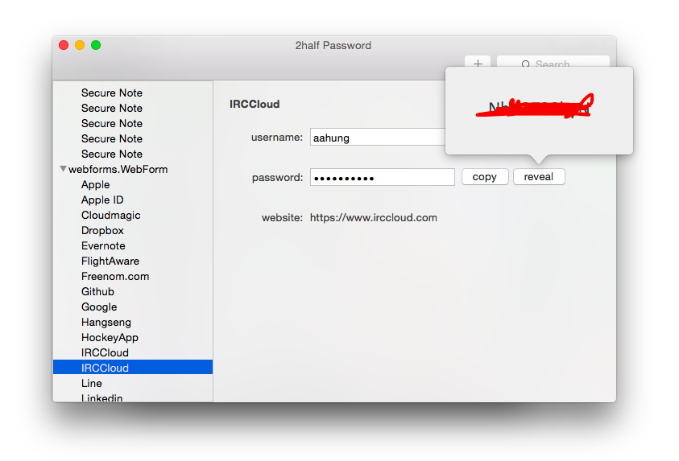

Introduction
1Password is a great product, it is versatile. For desktop, the only choice is the full version of 1Password with price USD 35 (yesterday 16 June it was 49). I just need its password management features, like they provide in iOS version.
Thanks to its open format of its vault, making 3rd party tools reality.
So I decide to make a simple and open source client which can be run on my MacBook.
Robertknight's 1pass and jbreams' gonepass provide as nice referrences.
2half Password is not affiliated with 1Password (owned by AgileBits)
Download
unfinished-version.app.zipRequire OS X 10.10+
Change Log
0.1a: initial alpha release, partial functions, showing decrypted JSON only. Support Dropbox vault only.
